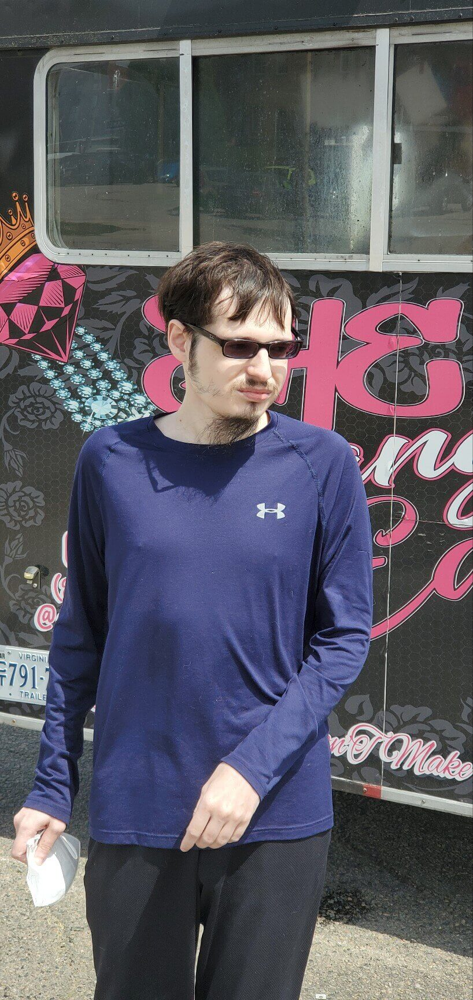

THE RICHMOND FOODIE
My name is Michael Taylor and I'm a foodie. I've been interested in trying new restaurants and different types of foods as long as I remember. Fortunately, Richmond has become a great place for foodies now. My parents tell the story that when they moved to Richmond in 1985, Style Magazine voted Pizza Hut the best pizza in town. The problem wasn't that they won – the problem was that they were the best pizza then. Now, Richmond is a great place for foodies. We have world class restaurants and chefs in town. They are featured on national food networks and compete for and win major food prizes like James Beard awards.
Sadly, a few of my favorite restaurants have been lost due to the pandemic. Restaurants such as Temple, Pescados and Isabella's will be missed greatly. And these are challenging times for the restaurant business, but there always seems to be new and creative restaurants and chefs to explore. The picture on the landing page is of the paella from a new restaurant in Midlothian called Oceano. Oceano took the place of Crab Louie's which had been in business for decades. So for every old favorite lost, a new favorite seems to come along
It isn't only restaurants. Richmond has one of the most vibrant food truck scenes anywhere. In the summer, food trucks can feed the family every day of the week and not repeat the food type once.
And Richmond has an incredible richness of food festivals. Everything from Armenian to Soul Food and everything in between, there is something the entire year.
I also love to explore great restaurants when I travel. I hope you enjoy this brief video of some of the great food I've tried in trips I've taken to Denmark, Australia, and San Diego.
I hope to be able to share some of my favorite restaurants, food trucks and provide a calendar of food festivals in town. If anyone has suggestions for your favorite restaurants or food trucks, I'd love to know about them.